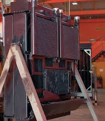
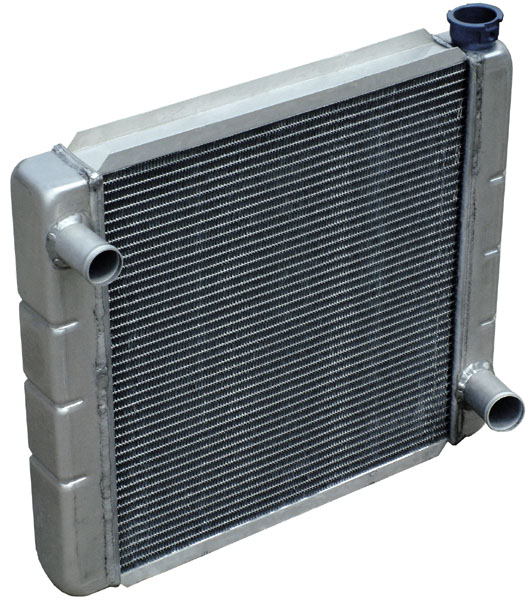
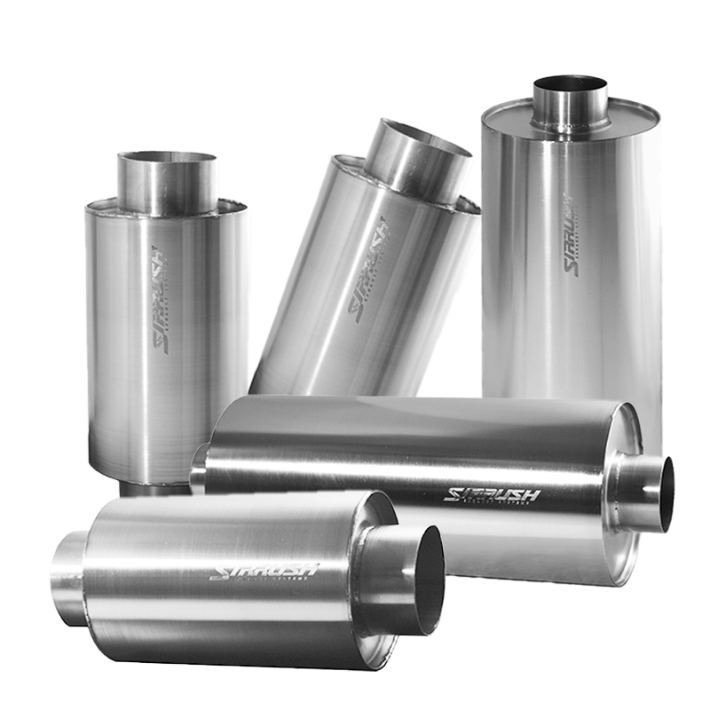
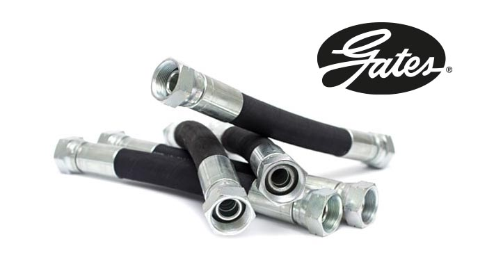
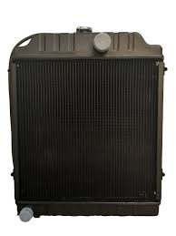
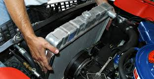
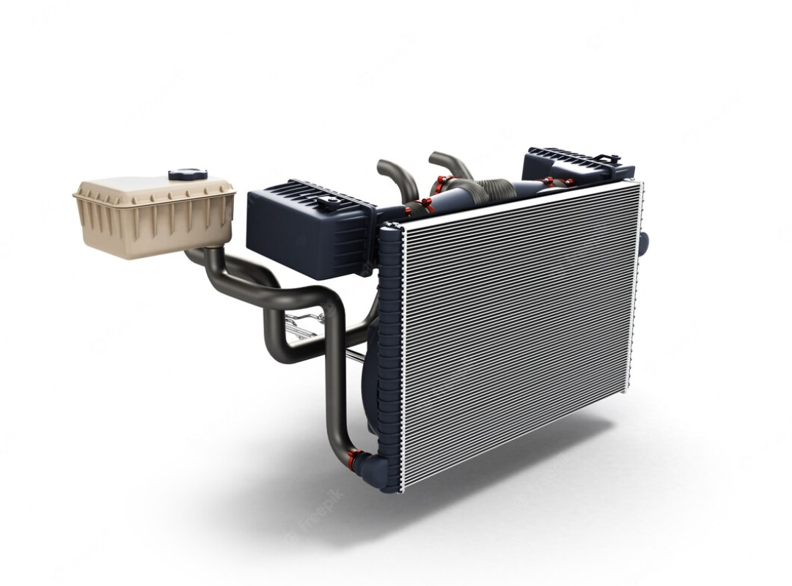
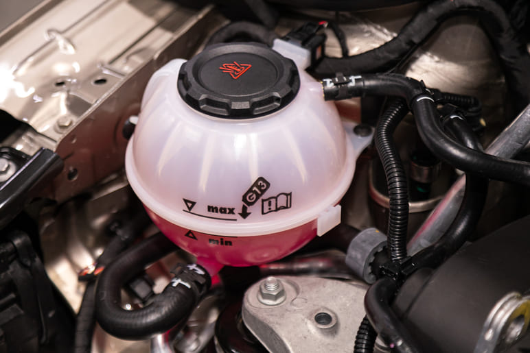

 |
 |
 |
 |
Un radiador industrial es un intercambiador de calor diseñado para aplicaciones industriales, como la transferencia de calor en procesos como la generación de energía, la petroquímica y la industria química. Estos radiadores disipan el calor generado por el funcionamiento de equipos industriales, evitando el sobrecalentamiento y manteniendo un rendimiento constante. |
El radiador en sí consiste en una serie de tubos a través de los cuales fluye el refrigerante. Los tubos se encuentran entre dos tanques que contienen refrigerante en la entrada y en la salida. Atados a estos tubos en el núcleo del radiador hay aletas, que irradian calor al aire (de ahí el nombre). |
Los mofles, también conocidos como silenciadores o escapes, son componentes vitales del sistema de escape de un vehículo.
Su principal función es reducir el ruido generado por el motor y las emisiones contaminantes. Un mofle también ayuda a mantener el rendimiento del motor y puede mejorar la eficiencia del combustible.
|
Las mangueras son tubos flexibles diseñados para transportar fluidos como líquidos, gases y polvos. Las conexiones, por otro lado, son componentes que permiten unir mangueras entre sí o a otros dispositivos, formando sistemas que facilitan el flujo de esos fluidos. En resumen, las mangueras permiten el transporte y las conexiones facilitan la conexión y adaptación de ese transporte. |
 |
 |  |  |
Un radiador agrícola es un componente vital en el sistema de refrigeración de tractores y otras maquinarias agrícolas. Su función principal es disipar el calor generado por el motor, previniendo el sobrecalentamiento y asegurando un rendimiento óptimo de la máquina. |
Las fallas más comunes en el radiador de un coche incluyen fugas de refrigerante, sobrecalentamiento del motor, corrosión o oxidación del radiador, y obstrucción por suciedad o depósitos. También pueden ocurrir problemas con el termostato o el ventilador, y fugas en las mangueras. |
El radiador del coche es un componente clave del sistema de enfriamiento que disipa el calor generado por el motor, evitando el sobrecalentamiento. Funciona mediante la transferencia de calor del líquido refrigerante al aire que pasa por sus aletas. |
El cuidado del sistema de enfriamiento automotriz es esencial para prevenir el sobrecalentamiento del motor y prolongar su vida útil. Esto incluye revisar el nivel y calidad del líquido refrigerante, limpiar el radiador, verificar la bomba de agua, las mangueras y el termostato, y mantener el sistema libre de fugas. |